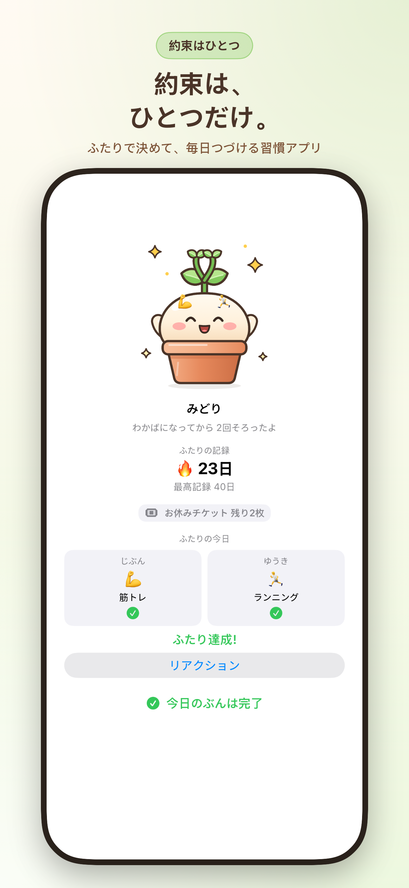
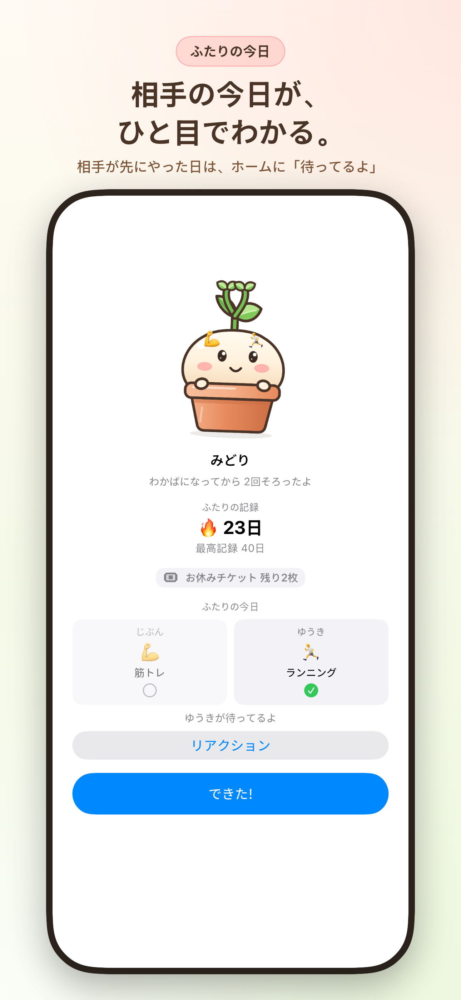
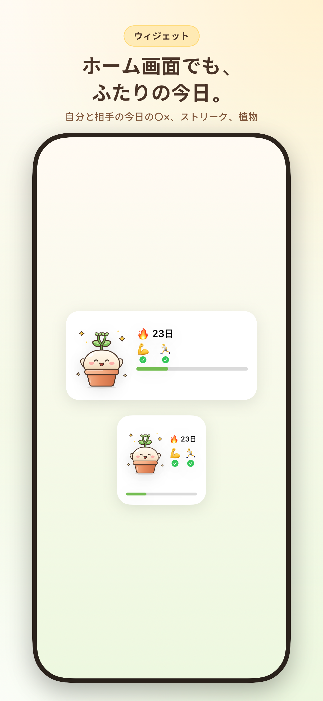

Lien リアン
ふたりで約束をひとつ決めて続ける習慣アプリ
紹介・プレス向け
ファクトシート｜v1.0
公開前下書き
ファクトシート｜v1.0
公開前下書き
それぞれの「今日できた」を持ち寄って、ふたりの記録と植物を育てる。約束は、ひとつだけ。
サービス概要
ふたりで相手を招待し、それぞれが自分の約束（習慣）をひとつ設定。できた日にチェックインして、ふたりの日々と植物を育てます。
対象
恋人・夫婦・友達・家族など、習慣を一緒に続けたいふたり。
v1.0 の主な機能
- 招待コード・QR・リンクでペアになり、それぞれの約束を設定
- 毎日チェックインでき、写真はペア成立後、任意で添付できます
- ふたりの今日（自分・相手）をホーム画面とウィジェットで確認
- ふたりそろった日の累計に応じて、植物「タネの子」が育つ
- 履歴カレンダーで振り返り、節目には記録画像を作成してシェア
提供環境・価格
iOS アプリ。v1.0 は全機能無料で提供します。
将来の価格は本資料では案内しません。
提供元
<OPERATOR_NAME>
G4（#42）で確定。App Store の販売者名と一致させます。
連絡先
<CONTACT_EMAIL>
G4（#42）で確定。アプリ内「お問い合わせ」の宛先にも同じアドレスを設定します。
本資料に載せていないこと
v1.0 に無い機能、利用者数・ダウンロード数・順位などの実績値、公開日は記載していません。実績値は docs/KPI.md の計測前のため扱いません。
画面イメージ（v4「タネの子」）



実際のアプリ画面（SwiftUI View）を CI のシミュレータで描画し、ストア用に合成した画像です。モックや実在しない画面は含みません。
資料の状態: 公開前の下書き。提供元名と連絡先は G4（#42）で確定します。mkt-lead の承認と mkt-review のレビュー後に使用してください。